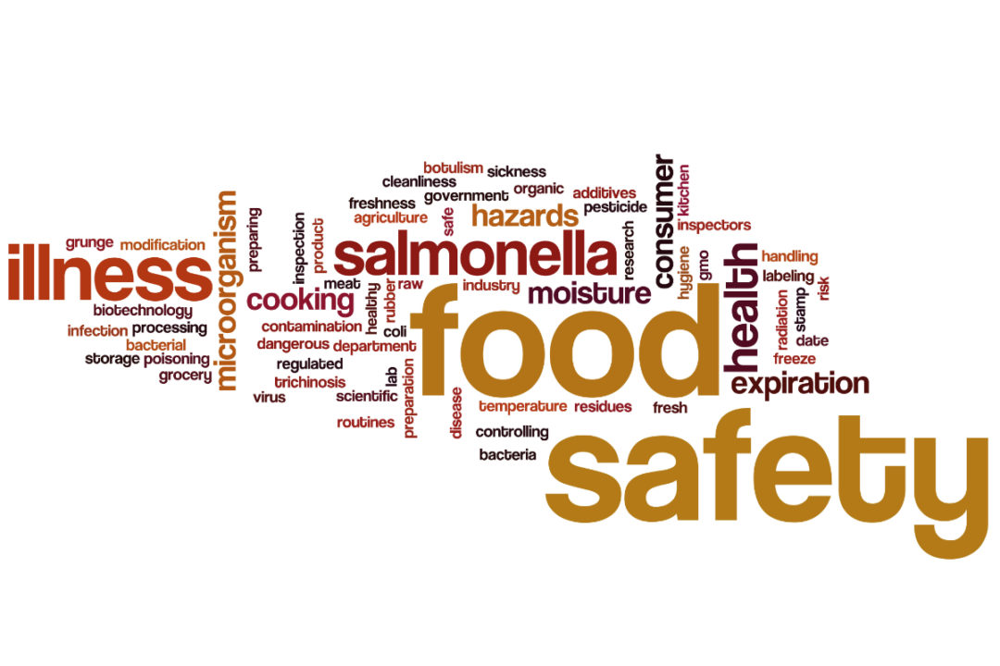

<section class="container-lg">
  <div class="container-md row  align-items-center">
    <h2>Cos'è SEQA</h2>
    <div class="py-5 col-md-6">

      <p class="fw-semibold">
        SEQA è una realtà giovane, nasce nel 2021 e si fonda su
        solide conoscenze accademiche e su competenze consolidate durante l'attivtià sul campo.
        Si distingue nel campo della consulenza sia in ambito di sicurezza alimentare che di
        miglioramento continuo dei processi di qualità.</p>

      <p class="fw-semibold">
        Rendere a norma e sopratutto efficiente un processo produttivo mirato ad alti standard
        qulitativi che nasconde certamente numerose insidie. SEQA
        non crea solo soluzioni personalizzate sulle esigenze del cliente, ma effettua anche analisi di
        scenario attaverso le preparate figure professionali delle quali dispone, validando le soluzioni
        migliori,
        così da garantire al cliente e al consumatore finale una perfonmance di qualità.
      </p>

      <p class="fw-semibold">
        Accompagnare i propri clienti verso l’implementazione di soluzioni innovative significa
        sviluppare, grazie a strumenti
        tecnologici appositi come: Software e strumenti mirati all' <em>internet of
          things</em>, sistemi di gestione
        della qualità
        personalizzati in grado di gestire le peculiarità di ogni realtà aziendale, piccola o
        grande che sia.
      </p>

      <p class="fw-semibold">
        Questa è SEQA. Una società di consulenza che valorizza ogni azienda e
        ogni settore, pensando e costruendo un percorso da compiere insieme. Perchè la sicurezza e la
        qualità alimentare sono un obbligo per le aziende ma anche un impegno verso il consumatore.
      </p>

    </div>
    <div class="col-md-6 text-center">
      
    </div>
  </div>
</section>
